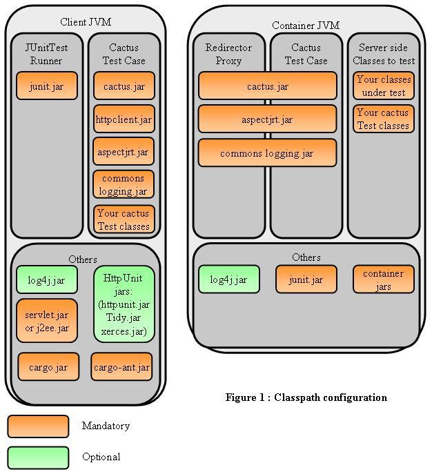

Setting up Cactus Classpaths
You must understand that your Cactus tests are started by a JUnit
Test Runner (in the client JVM) and that the Cactus TestCase that you
have extended will connect to the Cactus Redirector (in the server
JVM), where your testXXX() methods will be executed. See
How it works
to understand the
mechanism.
Please also check the TestRunner
Howto
tutorial which explains all the different ways to
start a JUnit Test Runner.
It is very important that you understand what files you need
to put in the client and server classpaths, as 99% of Cactus
errors come from an incorrect classpath !

Client side classpath
The Cactus tests are started by running a JUnit Test Runner (For
explanations on how JUnit works see the
JUnit web site).
As pictured in figure 1, you need to have the following jars and
classes in your client side classpath:
-
junit.jar
: obviously this is needed
for the JUnit Test Runner and because the Cactus
XXXTestCase
classes extend the JUnit
org.junit.framework.TestCase
class.
-
cactus.jar
: well, this is the
Cactus jar containing the core Cactus framework. Depending
on the J2EE version you are using it is named
cactus.core.framework.uberjar.javaEE.[J2EE_VERSION]-[CACTUS_VERSION].jar
-
your test classes: these are
your test classes that extend the Cactus
XXXTestCase
classes,
-
servlet.jar or j2ee.jar
: these are
the Servlet API / J2EE API interfaces. This
is needed on the client side classpath because your test cases
extend one or several of XXXTestCase which use class
variables that are Servlet / J2EE objects
(HttpSevletRequest, PageContext, ...).
You can get this jar either from your servlet engine or from the
Sun Web Site
(
Servlet download page
or
J2EE download
page).
-
httpclient.jar
: needed for
Cactus Cookie handling.
-
commons-logging.jar
: Cactus uses
the Jakarta Commons Logging facade framework to provide seamless
Cactus logging using any existing Logging framework (Log4j,
LogKit, JDK 1.4 Logging, etc). It is also needed for Commons
HttpClient.
-
logging framework jar(optional)
: The
logging framework to use (Log4j jar, LogKit jar, etc). It is
optional as it is only needed for internal Cactus logging and in
addition, the Commons Logging framework provides a simple logger
that logs on the console.
-
httpunit.jar
,
Tidy.jar
and
xerces.jar
(optional)
: only needed if you
wish to use
HttpUnit
in your endXXX() methods (see the
HttpUnit Howto
tutorial).
The 3 jars mentioned above are part of the HttpUnit distribution.
-
aspectjrt.jar
:
AspectJ
runtime jar.
If you have the habit of using class variables for the classes
to test (as opposed to declaring them within the
testXXX()
method), you'll also need to put your classes
under test in the client side classpath.
In addition to the above mentioned jars and classes, you may have
to put the
cactus.properties
configuration file in your classpath (Only if you are using it to
configure Cactus of course). Details are described in the
Config Howto
tutorial).
If you are using Log4J as the logging framework, you will also
need to put a log4j.properties Log4j configuration
file in your client side classpath (See the
Config Howto
tutorial).
Server side classpath
The server side part is a webapp. It can be packaged as a .war file
or as expanded war. It should have the following structure, which
will ensure that the classpath is correct:
-
WEB-INF/lib/cactus.core.framework.uberjar.javaEE.[J2EE_VERSION]-[CACTUS_VERSION].jar
: the
Cactus core framework jar,
-
WEB-INF/lib/junit.jar
: this is
needed because the Cactus XXXTestCase extends
the JUnit org.junit.framework.TestCase class.
-
WEB-INF/lib/aspectjrt.jar
:
AspectJ
runtime jar.
-
WEB-INF/lib/commons-logging.jar
:
Cactus uses the Jakarta Commons Logging facade framework to provide
seamless Cactus logging using any existing Logging framework (Log4j,
LogKit, JDK 1.4 Logging, etc). It is also needed for Commons
HttpClient.
-
WEB-INF/lib/logging framework jar
(optional)
: The logging framework to use (Log4j jar,
LogKit jar, etc). It is optional as it is only needed for internal
Cactus logging and in addition, the Commons Logging framework
provides a simple logger that logs on the console.
-
WEB-INF/classes/<your test classes>
: obviously as their testXXX() methods will
get executed in the container.
-
WEB-INF/classes/<your classes under test>
: will be called by your test classes.
If you have several webapps that use cactus you can put all Cactus
jars in a place loaded by your container System classloader (provided
your container correctly sets the Context classloader). The location
is container-dependent; for example for Tomcat 4.x, you can put the
jars in TOMCAT_HOME/common/lib.
If you are using Log4J as the logging framework, you will also
need to put a log4j.properties Log4j configuration
file in your server side classpath (usually in
WEB-INF/classes).